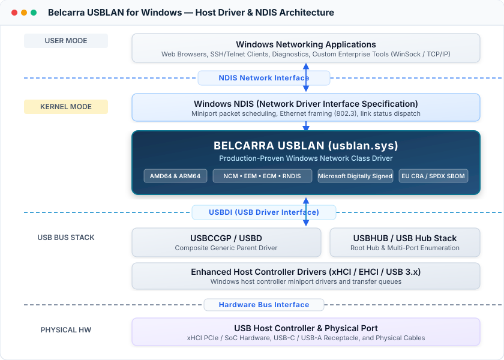

USBLAN Driver Overview and Architecture
Belcarra USBLAN for Windows is a combined Windows Driver Model (WDM) lower-edge and Network Driver Interface Specification (NDIS) miniport driver. It enables the simple creation and management of an Ethernet-compatible network interface over a physical USB connection to a vendor device using industry-standard USB networking protocols.
When an OEM device connects, USBLAN binds to the designated network function and exposes a standard Layer 2 network adapter to the Windows networking stack, routing native IP traffic seamlessly across the USB bus.
Why USB Networking? (Architecture Comparison)
When architecting smart hardware, IoT peripherals, and embedded instruments, engineering teams frequently evaluate three interface options for configuration and communication: USB Networking (USBLAN), Virtual Serial (CDC-ACM), and Wireless (Wi-Fi or Bluetooth). The table below summarizes key architectural trade-offs:
| Capability | USB Networking (USBLAN) | Virtual Serial (CDC-ACM) | Wireless (Wi-Fi / BLE) |
|---|---|---|---|
| Throughput & Latency | 480 Mbps to 5+ Gbps (Ultra-low) | Bottlenecked by baud rate / COM buffers | Variable; subject to RF congestion |
| Browser Configuration | Direct (http://192.168.x.x) |
Requires custom terminal / desktop app | Direct after complex pairing |
| Host Privilege Required | Zero administrative rights | Often requires elevated COM port access | Subject to corporate 802.1X/IT policies |
| Out-of-Box Provisioning | Instant on cable plug | Requires manual COM port selection | Complex soft-AP or BLE pairing steps |
| Physical Security & Isolation | Physical air-gap; immune to RF eavesdropping | Physical air-gap; non-networked | Vulnerable to RF sniffing / jamming |
| Power Delivery | Data and charging over single cable | Data and power over single cable | Requires separate power supply or battery |
| BOM & Radio Certification | Built-in SoC peripheral; $0 RF certification | Built-in SoC peripheral; $0 RF certification | Adds $5-$15 BOM; $30k-$80k+ FCC/CE testing |
For product management and deployment economics—including eliminating customer support tickets and corporate IT friction—read our in-depth FAQ: Why choose USB networking over wireless? →
Composite USB Device Decomposition
In USB specifications, networking is one possible function of an attached peripheral:
- Dedicated Network Device: The networking function can utilize the entire USB link and all available endpoints.
- Composite Sub-Function: The device can decompose into multiple concurrent sub-functions. USBLAN binds specifically to the networking interface (MI), allowing other sub-functions—such as CDC-ACM serial, Audio, or Mass Storage—to operate simultaneously over the same physical cable.
Low-Level Transfer Mechanics (IEEE 802.2)
Networking over USB operates at the IEEE 802.2 frame level. In simplest terms, raw Ethernet frames are packaged and transferred over the USB link:
- BULK Endpoints: Data is transmitted and received across high-speed USB BULK endpoints using asynchronous USB transfers.
- Multi-Frame Packing: USB low-level transfers bundle one or more complete network frames along with protocol-specific framing data, NTB headers, and transfer metadata for maximum efficiency and minimal CPU overhead.
Current primary target
- Windows 11 amd64
- Windows 11 arm64
- Windows 10 amd64 (Note: ARM64 is supported on Windows 11 only)
Protocol coverage
USBLAN supports all four major USB networking standards and automatically matches the protocol presented by your hardware:
- CDC-NCM
- CDC-EEM
- CDC-ECM
- RNDIS
For detailed protocol specifications, comparison tables, and integration guidance, see the USB Networking Protocols Guide →
Host Driver Architecture
The diagram below illustrates the relationship between Windows networking applications, the NDIS boundary, the Belcarra USBLAN kernel-mode driver (usblan.sys), the Windows USB bus driver stack, and the physical USB host controller. For the device-side peripheral controller and libcomposite stack, see the USB Device Framework Architecture →

Operational model
- For each connected device instance, USBLAN creates a Layer 2 network interface over USB transfer frames.
- Turnkey nested installation kits make USBLAN simple to use for OEMs and for their end customers, supporting branded pre-installation and silent deployment.
- Plug-and-play installation from a local driver store or Windows Update (based on kit configuration).
- Optional built-in DHCP service to coordinate host/device IPv4 addressing on point-to-point USB segments (see Address Management).
- Supports composite devices by matching the interface (MI) for the network sub-function.
Engineering features
- IPv4 and IPv6 support
- Power management support (sleep, standby, hibernation, resume)
- Microsoft digital driver signing and verification compatibility
- Multiple simultaneous USB devices (up to sixteen per host)
USB Vendor ID (VID) and Product ID (PID) Options
Windows device enumeration and Plug-and-Play (PnP) driver matching rely on 16-bit Vendor IDs (VID) and Product IDs (PID) presented by your device descriptors:
- Use Your Organization's VID/PID: If your company already owns an official USB-IF Vendor ID, Belcarra customizes the driver INF package with your VID and designated PID(s).
- Belcarra PID Allocation (Cost Savings): If your organization does not own a Vendor ID, Belcarra can allocate a dedicated Product ID (PID) under Belcarra's official USB-IF Vendor ID for your product. This eliminates the expense of purchasing a standalone Vendor ID from USB.org, saving licensees considerable funds and administrative overhead.
- Turnkey OEM Driver Packaging: Belcarra integrates the assigned IDs into Microsoft-signed Windows INF packages, ensuring seamless, branded plug-and-play installation on Windows 11 (AMD64 and ARM64) and Windows 10.